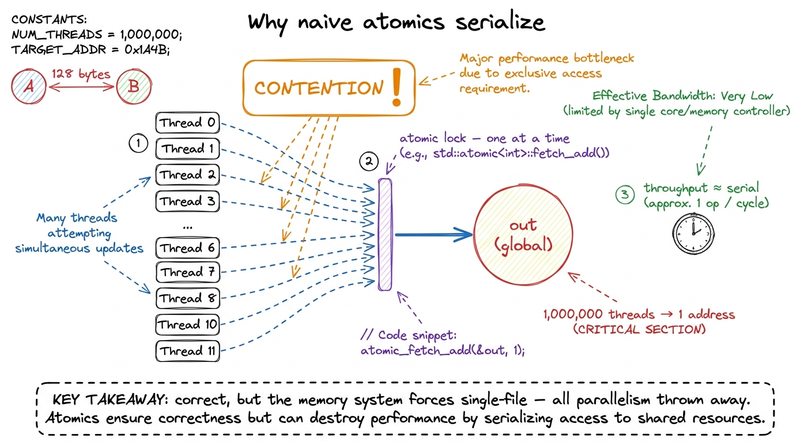
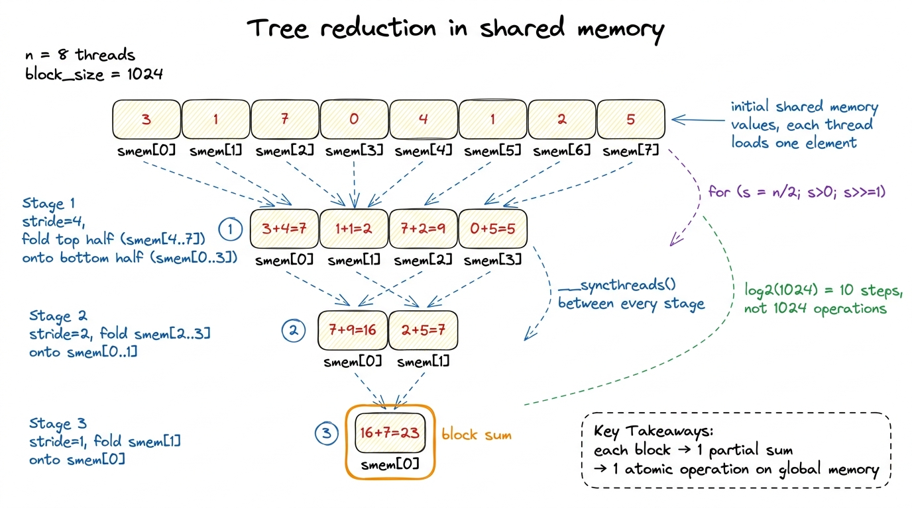
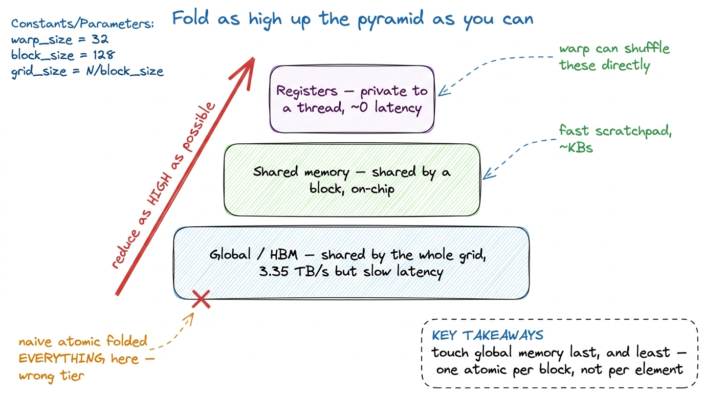
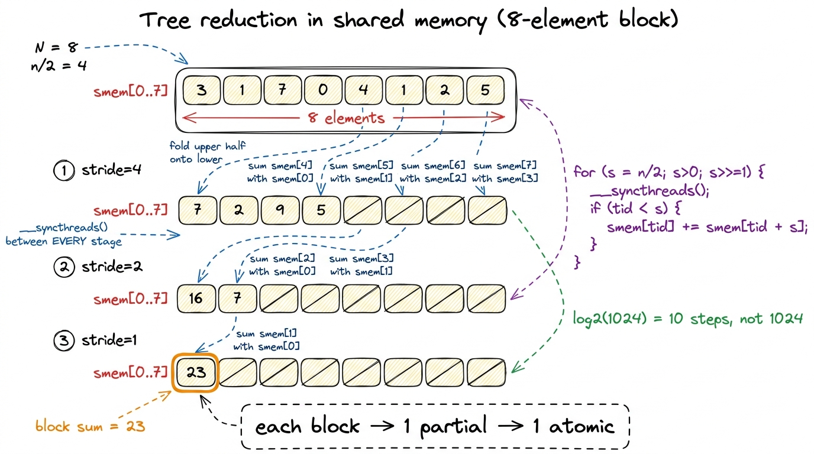

Atomics & reductions
A reduction is the humblest operation in all of parallel computing and one of the most instructive: take a million numbers and add them to one. Serially it is a single for loop a child could write. On a GPU it is a small masterpiece of coordination, because the entire premise of the machine — thousands of threads all doing the same thing at once — is at war with the shape of the problem, which is fundamentally sequential (acc += x, then acc += x again, forever). Learning to do a sum well teaches you the three tiers of GPU communication — registers, shared memory, global memory — and exactly how much each one costs. So we build it the way we build everything here: the dumb version first, a profile, then one honest step at a time.
We will sum an array of N floats. The reference is one line of NumPy. Our job is to match its answer while pulling a real fraction of the 3.35 TB/s of HBM3 bandwidth an H100 offers, because a sum reads every input exactly once and does almost no math — it is the textbook memory-bound kernel, and the only score that matters is what fraction of peak bandwidth we hit.1 Floating-point addition is not associative, so a parallel reduction and a serial one can disagree in the last few bits. That is not a bug; it is the price of parallelism, and every fast reduction on every GPU has this property.
The tempting wrong answer: one big atomic
The first idea everyone has is beautiful in its simplicity. Give every thread one element, and have each thread add its element straight into a single global accumulator with atomicAdd. The hardware guarantees the read-modify-write is indivisible, so the answer is correct.
__global__ void sum_atomic_naive(const float* x, float* out, int N) {
int i = blockIdx.x * blockDim.x + threadIdx.x;
if (i < N) atomicAdd(out, x[i]); // every thread hits the SAME address
}It is correct, and it is a disaster. The word atomic is doing enormous hidden work: to make the update indivisible, the memory system must serialize every thread that targets the same address. A million threads want to touch out; the hardware lets them through essentially one at a time. We built a parallel machine and then asked it to stand in a single-file line.

figure rendering · One global accumulator turns a parallel machine into a queue. CorrectOn the profiler this kernel spends almost all of its time in L2 atomic transactions, with achieved bandwidth stuck at roughly 1–2% of peak — single-digit percent, and effectively pinned there no matter how many threads we launch.2 Modern hardware does soften this: atomicAdd on floats is resolved in the L2 cache's atomic units, and the L2 can coalesce some same-address atomics from the same request. It helps, but the fundamental serialization of a single hot address remains. The lesson is not "atomics are slow" — it is "contention is slow". A hundred threads fighting over one address is the problem, not the atomic instruction itself. So the whole game becomes: reduce the number of atomics and spread them across many addresses.
Tier one: reduce inside the block with shared memory
The fix has a name — hierarchical reduction. Instead of a million threads each poking global memory, each thread block privately reduces its own chunk to a single partial sum, and only then does one atomic per block into the global total. If a block owns 1024 elements, we have just cut the number of global atomics by a factor of 1024. The reduction within the block happens in shared memory (SMEM), the fast on-chip scratchpad that all threads in a block can read and write.3 SMEM and L1 share the same 256 KiB of on-chip storage per SM, of which up to 228 KiB can be carved out as shared memory on Hopper. A reduction needs only a few KiB, so occupancy is never SMEM-limited here.
The classic in-SMEM algorithm is a tree reduction. Each thread loads one element into smem[tid]. Then we halve a stride each step: threads in the lower half add in the value from the upper half, so after step one, 512 partials remain; after step two, 256; and after ten steps, thread 0 holds the block's sum. log2(1024) = 10 steps instead of 1024 serial adds.
__global__ void sum_tree(const float* x, float* out, int N) {
__shared__ float smem[1024];
int tid = threadIdx.x;
int i = blockIdx.x * blockDim.x + tid;
smem[tid] = (i < N) ? x[i] : 0.0f;
__syncthreads();
for (int s = blockDim.x / 2; s > 0; s >>= 1) {
if (tid < s) smem[tid] += smem[tid + s];
__syncthreads(); // barrier every step
}
if (tid == 0) atomicAdd(out, smem[0]); // ONE atomic per block
}
figure rendering · The tree: halve the stride each step, one barrier per step, thread 0 eThis is a giant leap. We went from N global atomics to N/1024 of them, and each block's internal work is a fast SMEM tree. On the profiler the atomic traffic that dominated the naive kernel has all but vanished; we are now reading input from HBM at a real fraction of peak bandwidth. But there are two costs hiding in that loop, and the profiler points straight at them: a __syncthreads() barrier on every one of the ten steps, and the fact that for the last few steps almost every thread in the block is idle while a handful do the work.
Tier two: the warp is already synchronized — use it
Here is the key hardware fact the tree ignores. A warp is 32 threads that execute in lockstep on the same Streaming Multiprocessor (SM). Within a single warp there is no need for __syncthreads() at all — the threads are already in step. And better: warps can shuffle data between their registers directly, with no trip through shared memory, using the warp shuffle intrinsics. __shfl_down_sync(mask, val, delta) hands each lane the value held by the lane delta positions above it — a register-to-register move inside the SM, the cheapest communication the GPU offers.4 The _sync suffix and the mask argument are mandatory since Volta. Independent thread scheduling means you must name exactly which lanes participate — usually 0xffffffff for a full warp — or the result is undefined. The old maskless __shfl_down is gone.
So we do the last five levels of the tree entirely in registers, with zero barriers and zero SMEM:
__device__ float warp_reduce(float v) {
// 32 -> 16 -> 8 -> 4 -> 2 -> 1, all in registers
for (int offset = 16; offset > 0; offset >>= 1)
v += __shfl_down_sync(0xffffffff, v, offset);
return v; // lane 0 holds the warp's sum
}Five shuffles collapse 32 lanes to one, and nobody waits at a barrier. The full block reduction becomes a clean two-level affair: every warp reduces itself to one number with warp_reduce, those (at most 32) partials go into a tiny SMEM array, and then the first warp reduces that with a second warp_reduce. Only one real __syncthreads() remains in the whole kernel — the one that separates "all warps wrote their partial" from "warp 0 reads them all".

figure rendering · Warp shuffles do the intra-warp folds in registers; shared memory onlyThe win here is real but subtle: we did not change how many bytes we read, so peak-bandwidth-bound kernels do not magically double. What we removed is barrier and SMEM overhead inside the block, which matters most when the reduction is not perfectly bandwidth-saturated — small arrays, or blocks that were stalling on those ten __syncthreads(). The shuffle version is the correct default: it is simpler, it touches SMEM less, and it never leaves the input-read as anything but the bottleneck.
Tier three: make each thread do more, so launches do less
There is one structural inefficiency left, and it is not about atomics or barriers at all. If we launch exactly one thread per element, then half of all threads do nothing but a single load and one add before the tree even starts — the very first tree step already idles half the block. The classic fix is grid-stride loading with a serial pre-reduction: launch far fewer threads than elements, and have each thread walk the array in a grid-stride loop, accumulating many elements into a private register before any cooperation happens.
__global__ void sum_fast(const float* x, float* out, int N) {
__shared__ float smem[32]; // one slot per warp
int tid = threadIdx.x;
int lane = tid & 31, wid = tid >> 5;
// 1) serial pre-reduction into a register (coalesced, grid-stride)
float v = 0.0f;
for (int i = blockIdx.x * blockDim.x + tid; i < N;
i += blockDim.x * gridDim.x)
v += x[i];
// 2) reduce each warp in registers
v = warp_reduce(v);
if (lane == 0) smem[wid] = v;
__syncthreads();
// 3) first warp reduces the per-warp partials
if (wid == 0) {
v = (lane < (blockDim.x >> 5)) ? smem[lane] : 0.0f;
v = warp_reduce(v);
if (lane == 0) atomicAdd(out, v); // one atomic per block, total
}
}This is the correct fast kernel, and each line earns its place. Step 1 is where nearly all the runtime goes, and it is a perfectly coalesced grid-stride read: on each iteration the 32 lanes of a warp touch 32 consecutive floats — one clean 128-byte transaction, exactly one L2 line, no waste.5 The stride is blockDim.x * gridDim.x, not blockDim.x. That keeps consecutive threads on consecutive addresses every iteration, which is what makes the load coalesce; a per-block chunking scheme would stride each thread by N/threads and shred coalescing. Steps 2 and 3 are the barrier-light warp-shuffle tree from before. And the atomic count is now the number of blocks — a few thousand at most — each hitting the global accumulator once, which the L2's atomic units absorb without breaking a sweat.
Tuned this way, the kernel does what a memory-bound reduction should: it reads the input essentially once, coalesced, and spends its time on HBM traffic rather than on synchronization or contention. The achieved bandwidth climbs to well over 80% of the 3.35 TB/s peak — from ~1% to the high-eighties, three orders of magnitude of contention swept away — and the profiler's bottleneck line finally reads "memory" with nothing pathological underneath it, which, for a reduction, is the definition of done.
The ladder, in one breath
We moved through the entire memory hierarchy on purpose. The naive atomic used global memory as the accumulator and serialized on one address. The tree used shared memory to reduce per block, cutting global atomics by three orders of magnitude. The warp shuffle used registers to do the innermost folds with no barriers at all. And the grid-stride pre-reduction made sure each thread arrives at the cooperative phase already carrying many elements, so no lane is wasted and every load is coalesced.

figure rendering · The whole design in one picture: reduce in registers, aggregate in shaThat is the reduction pattern, and it is not just about sums. Max, min, argmax, the logsumexp at the heart of softmax, the row-statistics inside a LayerNorm — every one of them is this same skeleton with the + swapped out. Get the sum right and you have gotten the shape of a whole family of kernels right. Next we take this cooperative, warp-aware thinking into the first operation where it truly pays off at scale: tiling a GEMM in shared memory, where reuse — not just reduction — is the prize.